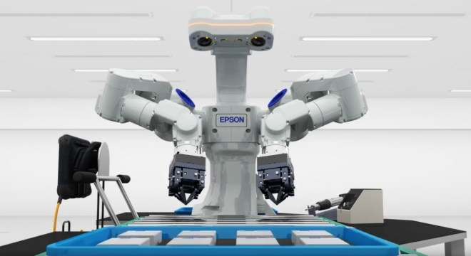

CONTRIBUTION OF AUTONOMOUS ROBOTICS TO HUMANITY
Presenting solutions to common problems is what is sought when innovating and creating new things. Both robotics and artificial intelligence have the challenge of transforming various aspects of daily life without the need for human intervention. The ability to perform actions autonomously implies the need to perceive and understand the environment that surrounds a robot, to see what it is around, such as a person or a wall, to have the ability to react as its environment changes, always keeping your goal in mind.
Until recently, the best-known robots were the industrial ones used mostly in production plants; today there are many more types, such as autonomous ground vehicles such as self-driving cars, autonomous aerial vehicles such as drones and humanoids that are used as assistance or company robots.
This expansion of robotics has been thanks to a boost in mechatronics and the development of increasingly powerful, small, and robust processing systems and sensors. But the key for everything to work in a coordinated way is the software. Algorithms allow robots to move, see and perceive the environment through sensors, unlike traditional industrial robots, to locate themselves in eternal complexes, this is a very important task that real autonomy robots adopt. Multiple sectors benefit from these developments: logistics, inspection, infrastructure maintenance, and construction, among others.
One of the clearest examples of how significant the development of robots is Curiosity, the NASA robot that has an artificial intelligence system installed that helps it study the composition of Mars. This robot is very efficient because it takes mostly its own decisions. While Curiosity travels through the planet, AEGIS, the artificial intelligence, oversees selecting the best rocks so that the robot can analyze them. This system chooses 93% the same rock that a human would have chosen and takes 120 seconds to select and inspect a stone. This robot and its artificial intelligence represent a new era for space exploration.
Likewise, society will benefit from these developments over time, as an example of this will be assistance robots for the elderly, rescue aid robots for tasks that are difficult for humans to access, or robots to conserve the environment. The future is very promising, artificial intelligence will allow robots to have very sophisticated new capabilities, its integration in robots will allow the development of applications never seen before.